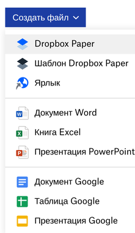
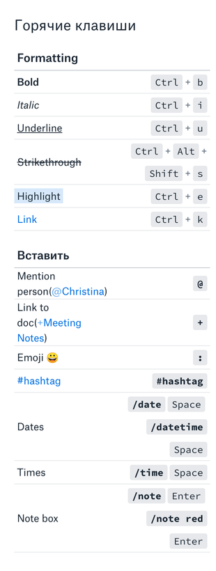
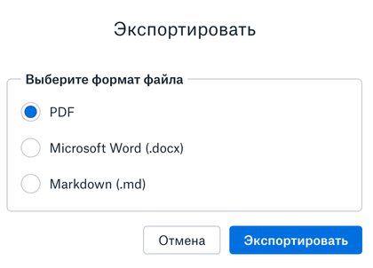
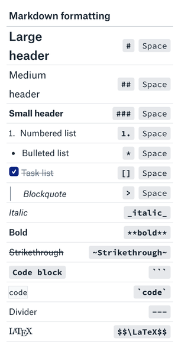

Хотел рассказать про приложение Dropbox Paper, с помощью которого можно делать текстовые страницы с разметкой. Думаю, многие знают о Dropbox как о сервисе обмена файлами, но Dropbox Paper менее известен; ранее он был отдельным приложением.
Google Docs загружаются какое-то время, а когда нужно быстро записать мысли, не думая о разметке, я обычно использую Google Keep. Проблемы начинаются, когда нужны заголовки (разбить текст) и ссылки (много ссылок по тексту). И здесь у Dropbox Paper как раз всё в порядке, а ещё есть:
- Задачи, в том числе можно назначить их другим
- Ссылки на другие страницы Dropbox Paper, то есть можно сделать (почти) свою wiki
- Удобные горячие клавиши
- Markdown разметка
- Экспортировать можно в тот же markdown, а также в PDF и Word

Создание документа Dropbox Paper
Естественно, можно давать другим доступ на чтение и редактирование, причём для этого не нужен аккаунт Google, с одной стороны. А с другой, у многих уже есть аккаунт в Dropbox. Совместная работа обустроена по полной программе: можно добавлять комментарии, смотреть историю изменений, добавлять заметки по тексту.
Поскольку Dropbox изначально – сервис обмена файлами, пользователь сам полностью отвечает за то, что в какой папке лежит. Другими словами, файлы могут быть вперемешку со страницами, если самому всё не разложить. С другой стороны, так проще предоставлять доступ (если и файлы, и страницы в одной папке). Думаю, такая организация информация станет неудобной при большом количестве файлов. Аналогично wiki, можно создавать новые страницы "налету", то есть при редактировании другой страницы.

Горячие клавиши (начало)
Что мне нравится при работе с Markdown-документами – это то, что думаешь в первую очередь о структуре документа и смысловой разметке. Недостатком работы с Markdown-документами в режиме исходного текста является то, что ты не видишь результата. В Dropbox Paper этот недостаток как раз устранён: сразу видно, как документ в итоге выглядит.
Немного удивило то, что файлы Dropbox Paper на диске хранятся не в режиме Markdown-разметки. По сути, в них видна только ссылка на документ, который хранится в облаке. Думаю, при желании перенести всю информацию с многочисленных страниц это может быть неудобно, ведь придётся экспортировать в Markdown каждую страницу отдельно.

Экспорт документа
Также радуют горячие клавиши – они именно такие, которых ожидаешь, без сюрпризов. Это ещё один плюс к скорости работы, к тому же не отвлекаешься лишний раз, когда нужно поставить ссылку или выделить текст.

Горячие клавиши (продолжение)
Не использовал функционал задач, тем более постановки задач кому-то, но для каких-то случаев этого функционала может быть вполне достаточно. В целом суть Dropbox Paper, а именно минимальные средства, максимальная скорость и удобство, безусловно заслуживает аплодисментов.
Внезапно при использовании заголовков слева появляется всплывающее содержание, можно быстро переходить к конкретным разделам. Но создатели Dropbox Paper на этом не остановились, добавили поддержку формул LaTeX и подсветку кода (с автоматическим определением языка).
Если команда сформирована, то лучше иметь готовый инструмент совместной работы (groupware или wiki). Если же задача есть, но не понятно, выльется ли она во что-то большее, то Dropbox Paper может вполне подойти для совместного творчества.
Комментарии